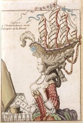

For centuries, and possibly even longer, human beings have had hair. Over time, what people have done with their hair has varied greatly. While some people have styled and cut their hair in ways that are very aesthetically pleasing, there are many people throughout history who have made very bad decisions with their hair.
One example of a historically bad haircut was Marie Antoinette, wife of the French King Louis XVI and last Queen of France, who was known for her extravagant and labor-intensive hair styles. Perhaps her most over-the-top haircut involved a recreation of the French frigate "La Belle Poule" woven to the top of her bulbous puff of hair.
Today, bad haircuts are still prevelant in society. Click here to see for yourself.